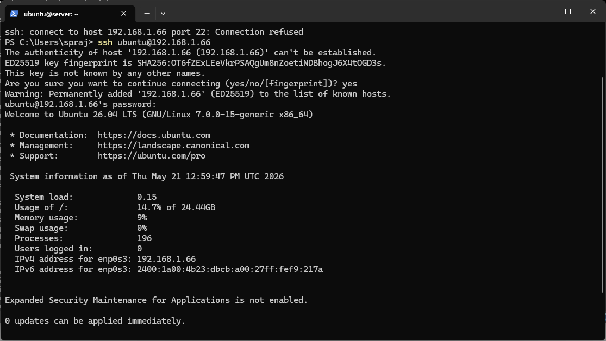

Deploying foundational security controls — SSH hardening, firewall configuration, and user privilege management.
| Deliverable | Status |
|---|---|
| SSH key-based authentication configured | To Do |
| Firewall configured (SSH from workstation only) | To Do |
| Non-root administrative user created | Done |
| SSH access evidence (screenshots) | Done |
| Configuration files — before/after comparisons | To Do |
| Firewall ruleset documentation | To Do |
| Remote administration evidence | Done |
Replacing password authentication with cryptographic key pairs — industry standard for secure server access.
Run in Windows PowerShell (not on the server):
PS C:\Users\spraj> ssh-keygen -t ed25519 -C "cmpn202-coursework" Generating public/private ed25519 key pair. Enter file in which to save the key (C:\Users\spraj/.ssh/id_ed25519): Enter passphrase (empty for no passphrase): Your identification has been saved in C:\Users\spraj/.ssh/id_ed25519 Your public key has been saved in C:\Users\spraj/.ssh/id_ed25519.pub The key fingerprint is: SHA256:xxxxxxxxxxxxxxxxxxxxxxxxxxxxxxxxxxxxxxxxxxxx cmpn202-coursework
From Windows PowerShell:
PS C:\Users\spraj> type $env:USERPROFILE\.ssh\id_ed25519.pub | ssh ubuntu@192.168.1.66 "mkdir -p ~/.ssh && cat >> ~/.ssh/authorized_keys && chmod 600 ~/.ssh/authorized_keys && chmod 700 ~/.ssh"
PS C:\Users\spraj> ssh ubuntu@192.168.1.66 Welcome to Ubuntu 26.04 LTS (GNU/Linux 7.0.0-15-generic x86_64) ubuntu@server:~$ # No password prompt — key authentication successful
Edit SSH config via SSH session:
ubuntu@server:~$ sudo nano /etc/ssh/sshd_config
# Before changes PasswordAuthentication yes PermitRootLogin yes PubkeyAuthentication yes
# After hardening PasswordAuthentication no PermitRootLogin no PubkeyAuthentication yes AllowUsers ubuntu
ubuntu@server:~$ sudo systemctl restart ssh
ubuntu@server:~$ sudo systemctl status ssh
● ssh.service - OpenBSD Secure Shell server
Loaded: loaded (/usr/lib/systemd/system/ssh.service; enabled)
Active: active (running)
Configuring UFW (Uncomplicated Firewall) to deny all incoming traffic except SSH from the workstation IP only.
ubuntu@server:~$ sudo ufw status Status: inactive
ubuntu@server:~$ sudo ufw default deny incoming Default incoming policy changed to 'deny' ubuntu@server:~$ sudo ufw default allow outgoing Default outgoing policy changed to 'allow'
ubuntu@server:~$ sudo ufw allow from 192.168.1.0/24 to any port 22 Rule added
ubuntu@server:~$ sudo ufw enable Command may disrupt existing ssh connections. Proceed with operation (y|n)? y Firewall is active and enabled on system startup
ubuntu@server:~$ sudo ufw status verbose Status: active Logging: on (low) Default: deny (incoming), allow (outgoing), disabled (routed) New profiles: skip To Action From -- ------ ---- 22 ALLOW IN 192.168.1.0/24
Verifying and documenting the non-root administrative user configuration.
ubuntu@server:~$ whoami
ubuntu
ubuntu@server:~$ id
uid=1000(ubuntu) gid=1000(ubuntu) groups=1000(ubuntu),4(adm),24(cdrom),27(sudo),30(dip),46(plugdev)
ubuntu@server:~$ sudo -l
Matching Defaults entries for ubuntu on server:
env_reset, mail_badpass
User ubuntu may run the following commands on server:
(ALL : ALL) ALL
ubuntu@server:~$ getent group sudo sudo:x:27:ubuntu
ubuntu@server:~$ sudo passwd -l root passwd: password expiry information changed. ubuntu@server:~$ sudo passwd -S root root L 05/21/2026 0 99999 7 -1
Demonstrating successful SSH connection from Windows workstation to Ubuntu server.

Commands executed remotely via SSH demonstrating full administrative capability without console access.
ubuntu@server:~$ uptime 13:05:21 up 1:23, 1 user, load average: 0.08, 0.05, 0.01 ubuntu@server:~$ ps aux --sort=-%cpu | head -10 USER PID %CPU %MEM VSZ RSS TTY STAT START TIME COMMAND root 1 0.0 0.3 168096 11264 ? Ss 11:42 0:01 /sbin/init ubuntu@server:~$ sudo systemctl list-units --type=service --state=running UNIT LOAD ACTIVE SUB DESCRIPTION cron.service loaded active running Regular background program networkd-dispatcher.service loaded active running Networkd-dispatcher ssh.service loaded active running OpenBSD Secure Shell server systemd-journald.service loaded active running Journal Service ufw.service loaded active running Uncomplicated firewall
ubuntu@server:~$.
This week marked the transition from planning to implementation. Configuring SSH key-based authentication required careful sequencing — the key must be copied to the server before disabling password authentication, otherwise you lock yourself out permanently.
The UFW firewall configuration highlighted an important trade-off: restricting SSH to only the workstation subnet (192.168.1.0/24) significantly reduces attack surface but means the server cannot be accessed from any other location. This is acceptable for a coursework environment but would require a VPN solution in production.
Key learning: The order of operations in security configuration matters critically. Enabling the firewall before confirming SSH rules could have blocked all access. Testing each step before proceeding is essential professional practice.